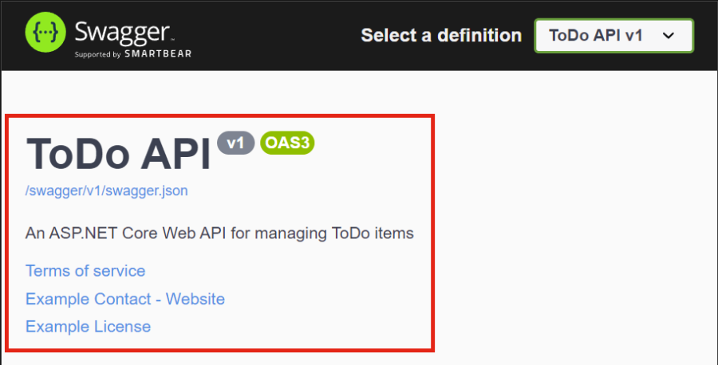
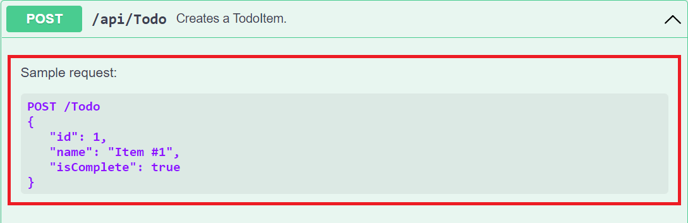
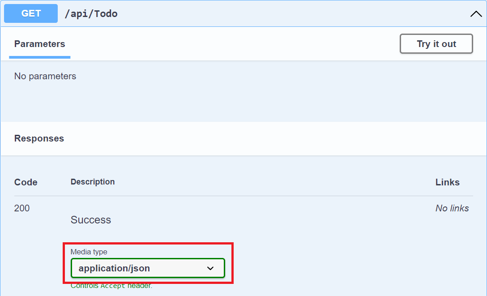

swashbuckle
Overview [Documentation]
Swashbuckle is an implementation of OpenAPI in ASP.NET Core.
It has 3 main components:
Swashbuckle.AspNetCore.Swagger— a Swagger object model and middlewareSwashbuckle.AspNetCore.SwaggerGen— a Swagger generator that builds a SwaggerDocument from routes, controllers and modelsSwashbuckle.AspNetCore.SwaggerUI— an embedded version of Swagger UI
Installation
dotnet add package swashbuckle.aspnetcore
Configuration
Program.cs
// ...
builder.Services.AddControllers();
// This is required for minimal APIs:
builder.Services.AddEndpointsApiExplorer();
// Adds the Swagger generator:
builder.Services.AddSwaggerGen();
if (app.Environment.IsDevelopment())
{
// serve the generated JSON document:
app.UseSwagger();
// serve the Swagger UI:
app.UseSwaggerUI(options =>
{
options.SwaggerEndpoint("/swagger/v1/swagger.json", "v1");
// required if injecting a custom stylesheet to brand the Swashbuckle components:
options.InjectStylesheet("/swagger-ui/custom.css");
// with this option, access the Swagger UI at https://localhost:<port>
// otherwise, access it at https://localhost:<port>/swagger:
options.RoutePrefix = string.Empty;
// use this option to use OpenAPI version 2.0 (default = false (3.0)):
options.SerializeAsV2 = true;
});
}
// ...
// these calls are required if branding the Swashbuckle components:
app.UseHttpsRedirection();
app.UseStaticFiles();
app.MapControllers();
Configuring API Information and Description
Program.cs
// ...
builder.Services.AddSwaggerGen(options =>
{
options.SwaggerDoc("v1", new OpenApiInfo
{
Version = "v1",
Title = "ToDo API",
Description = "An ASP.NET Core Web API for managing ToDo items",
TermsOfService = new Uri("https://example.com/terms"),
Contact = new OpenApiContact
{
Name = "Example Contact",
Url = new Uri("https://example.com/contact")
},
License = new OpenApiLicense
{
Name = "Example License",
Url = new Uri("https://example.com/license")
}
});
});
// ...
Configuring XML Comments
XML comments enables debug information for undocumented types and members. Most features require an XML file.
Enabling XML Comments
- Update the project file:
SomeProject.csproj<PropertyGroup> <GenerateDocumentationFile>true</GenerateDocumentationFile> </PropertyGroup> - To suppress certain warnings, use a
NoWarnproperty. This example ignores CS1591. More warning codes can be added to the semicolon-delimited list:<PropertyGroup> <GenerateDocumentationFile>true</GenerateDocumentationFile> <NoWarn>$(NoWarn);1591</NoWarn> </PropertyGroup> - Configure Swagger UI to use the XML file:
Program.csbuilder.Services.AddSwaggerGen(options => { options.SwaggerDoc("v1", new OpenApiInfo { Version = "v1", Title = "ToDo API", Description = "An ASP.NET Core Web API for managing ToDo items", TermsOfService = new Uri("https://example.com/terms"), Contact = new OpenApiContact { Name = "Example Contact", Url = new Uri("https://example.com/contact") }, License = new OpenApiLicense { Name = "Example License", Url = new Uri("https://example.com/license") } }); // using System.Reflection; var xmlFilename = $"{Assembly.GetExecutingAssembly().GetName().Name}.xml"; options.IncludeXmlComments(Path.Combine(AppContext.BaseDirectory, xmlFilename)); });
This renders:

Using Swagger
Accessing Swagger
Navigate to https://localhost:<port>/swagger/v1/swagger.json. This should match openapi.json in the project.
To access the Swagger UI, navigate to https://localhost:<port>/swagger.
Applying XML Comments
-
Add triple-slash comments to an action:
/// <summary> /// Creates a TodoItem. /// </summary> /// <param name="item"></param> /// <returns>A newly created TodoItem</returns> /// <remarks> /// Sample request: /// /// POST /Todo /// { /// "id": 1, /// "name": "Item #1", /// "isComplete": true /// } /// /// </remarks> /// <response code="201">Returns the newly created item</response> /// <response code="400">If the item is null</response> [HttpPost] [ProducesResponseType(StatusCodes.Status201Created)] [ProducesResponseType(StatusCodes.Status400BadRequest)] public async Task<IActionResult> Create(TodoItem item) { _context.TodoItems.Add(item); await _context.SaveChangesAsync(); return CreatedAtAction(nameof(Get), new { id = item.Id }, item); }This renders:
 -
Add data annotations to the model:
using System.ComponentModel; using System.ComponentModel.DataAnnotations; namespace SwashbuckleSample.Models; public class TodoItem { public long Id { get; set; } [Required] public string Name { get; set; } = null!; [DefaultValue(false)] public bool IsComplete { get; set; } } -
Add attributes to the controllers:
[ApiController] [Route("api/[controller]")] [Produces("application/json")] public class TodoController : ControllerBase { // ... }This renders:

API conventions can be used in place of attributes if desired.
See Also
Swashbuckle.AspNetCore.Annotations — extensions that enable and enrich the response, schema, and parameter metadata.